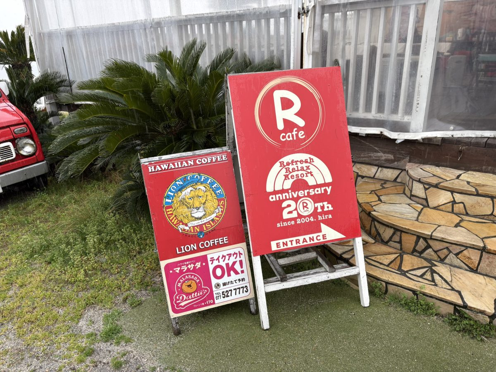

R cafe
滋賀県大津市北比良934-1
備考・犬連れでのポイント
琵琶湖畔のハワイアンスタイルのドッグカフェ。店内全席犬同伴OKで、小型犬から大型犬まで利用でき、バギーの持ち込みも可。
テラス席もあり天気の良い日は琵琶湖を眺めながら食事できる。犬用メニューあり。
営業時間は月〜金11:00〜18:00（ラストオーダー17:00）、土曜10:00〜19:00（ラストオーダー18:00）、日祝11:00〜19:00（ラストオーダー18:00）で、木曜定休。
7月は日祝が10:00開店になるなどシーズンにより変動し、7〜8月は木曜も営業する場合あり。
訪問前に公式サイト・SNSで要確認。犬の利用料は1頭300円で、毎月1日・11日・21日・31日のわんわんデーは無料。
駐車場は約30台でR cafe利用なら2時間無料。冬季休業の場合あり。
TEL: 077-596-1355。